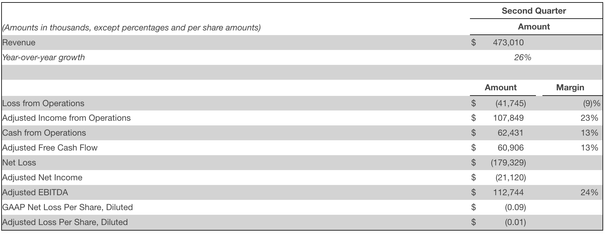
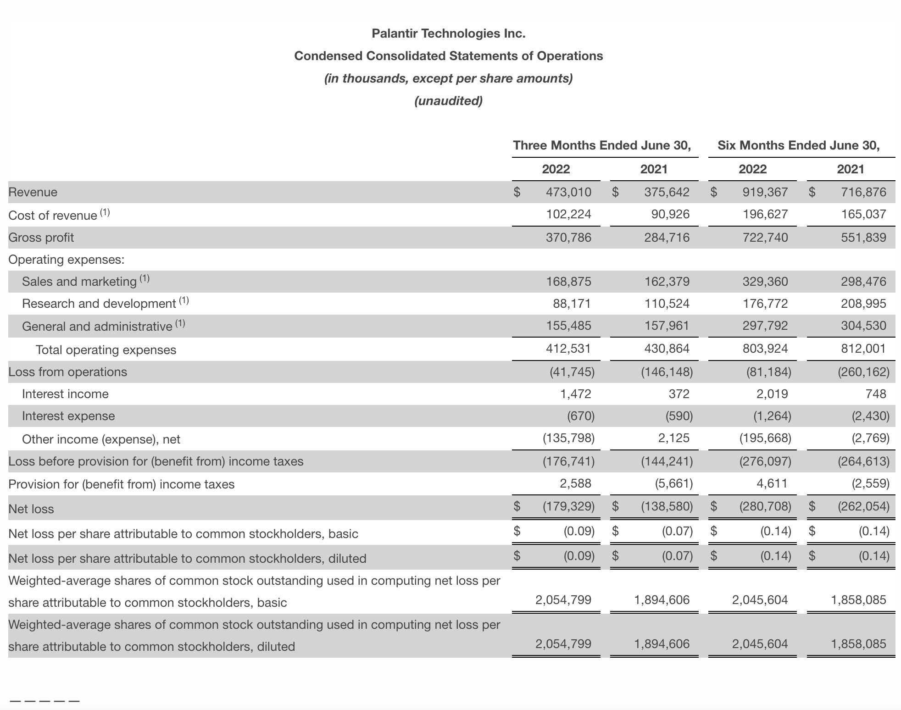
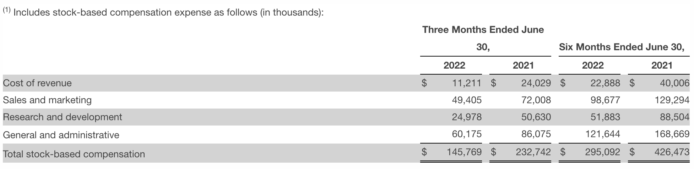
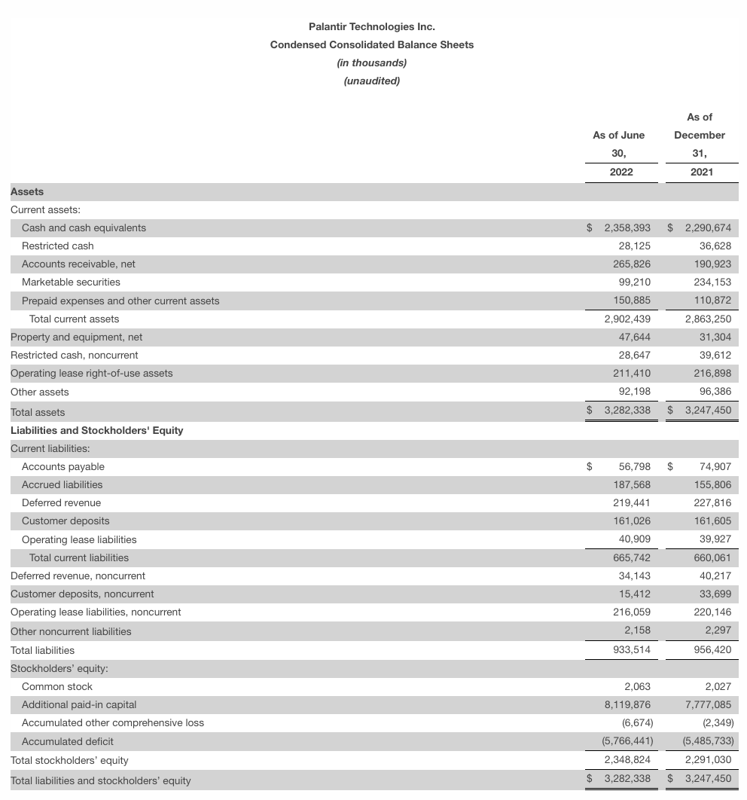
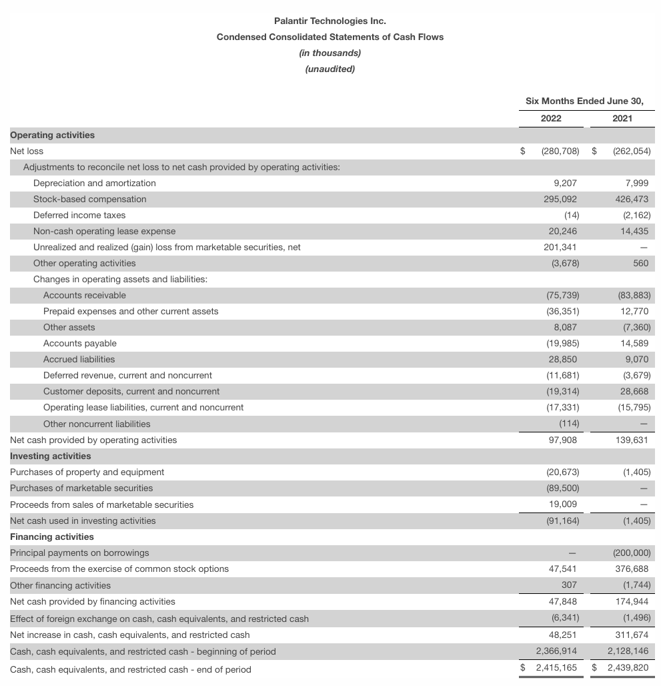
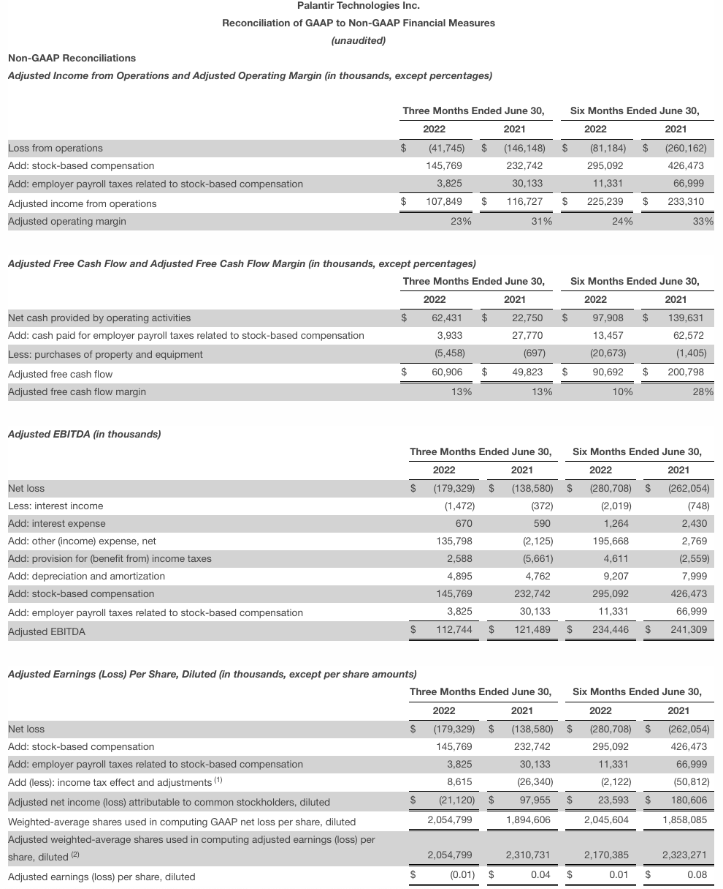

Palantir Reports Revenue Growth of 26% Y/Y for Q2 2022
US Commercial Revenue Up 120% Y/Y in Q2 2022
DENVER--(BUSINESS WIRE)--Palantir Technologies Inc. (NYSE:PLTR) today announced financial results for the second quarter ended June 30, 2022.
Q2 2022 Highlights
Revenue grew 26% year-over-year to $473 million
US revenue grew 45% year-over-year to $290 million
Commercial revenue grew 46% year-over-year
US commercial revenue grew 120% year-over-year
US government revenue grew 27% year-over-year
US commercial customer count increased 250% year-over-year, from 34 customers in Q2 2021 to 119 customers in Q2 2022
Total contract value (“TCV”) closed of $792 million, including US TCV closed of $588 million
Loss from operations of $(42) million, representing a margin of (9)%, up 3,000 basis points year-over-year
Adjusted income from operations of $108 million, representing a margin of 23%
Cash from operations of $62 million, representing a 13% margin
Adjusted free cash flow of $61 million, representing a 13% margin
Q2 2022 TTM Highlights
US revenue of $1.04 billion on a trailing-twelve-months (“TTM”) basis
Cash from operations of $292 million, representing a 17% margin
Adjusted free cash flow of $314 million, representing an 18% margin
Q2 2022 Financial Summary

Outlook
For Q3 2022, we expect revenue of between $474 - $475 million and adjusted income from operations of $54 - $55 million.
For full year 2022, we now expect revenue of between $1.9 - $1.902 billion and adjusted income from operations of $341 - $343 million. This revised guidance excludes any new major U.S. government awards and we believe this to be the base case.
Earnings Webcast
A live public webcast will be held at 6:00 a.m. MT / 8:00 a.m. ET today to discuss the results for our second quarter ended June 30, 2022 and financial outlook. The webcast can be accessed by registering online at https://palantir.events/palantir-2022-q2. A replay of the webcast will be available at https://investors.palantir.com following the event.
An investor presentation, including supplemental financial information and reconciliations of certain non-GAAP measures to their nearest comparable GAAP measures, will be available through Palantir’s Investor Relations website at https://investors.palantir.com, as well as a letter from our Chief Executive Officer, which will be available through Palantir’s website at https://www.palantir.com.
Forward-Looking Statements
This press release and statements on our earnings webcast contain “forward-looking statements” within the meaning of the “safe harbor” provisions of the Private Securities Litigation Reform Act of 1995, including, but not limited to, statements regarding our financial outlook, product development, distribution, and pricing, expected benefits of and applications for our software platforms, business strategy, and plans (including strategy and plans relating to our sales and marketing efforts, sales force, partnerships, and customers), investments in our business, market trends and market size, opportunities (including growth opportunities), our expectations regarding our recent and potential investments in, and commercial contracts with, various entities, including special purpose acquisition companies and other privately-held or publicly-traded companies, our expectations regarding macroeconomic events, and positioning. These forward-looking statements are made as of the date they were first issued and were based on current expectations, estimates, forecasts, and projections as well as the beliefs and assumptions of management. Words such as “guidance,” “expect,” “anticipate,” “should,” “believe,” “hope,” “target,” “project,” “plan,” “goals,” “estimate,” “potential,” “predict,” “may,” “will,” “might,” “could,” “intend,” “shall,” and variations of these terms or the negative of these terms and similar expressions are intended to identify these forward-looking statements. Forward-looking statements are subject to a number of risks and uncertainties, many of which involve factors or circumstances that are beyond our control. Our actual results could differ materially from those stated or implied in forward-looking statements due to a number of factors, including but not limited to risks detailed in our filings with the Securities and Exchange Commission (the “SEC”), including in our annual report on Form 10-K for the fiscal year ended December 31, 2021 and other filings and reports that we may file from time to time with the SEC, including our quarterly report on Form 10-Q for the fiscal quarter ended June 30, 2022. In particular, the following factors, among others, could cause our results to differ materially from those expressed or implied by such forward-looking statements: our ability to successfully execute our business and growth strategy; the sufficiency of our cash and cash equivalents to meet our liquidity needs; the demand for our platforms in general; our ability to increase our number of new customers and revenue generated from customers; our ability to realize some or all of the total contract value of customer contracts as revenue, including any contractual options available to customers or contractual periods that are subject to termination for convenience provisions; our long and unpredictable sales cycle; our ability to successfully grow our direct sales force and to successfully execute our channel sales and other strategic initiatives with third parties; our ability to retain and expand our customer base; the fluctuation of our results of operations and our key business measures on a quarterly basis in future periods; the seasonality of our business; the implementation process for our platforms, which may be complex and lengthy; our ability to successfully develop and deploy new technologies to address the needs of our existing or prospective customers; our ability to make our platforms easier to install and consume; our ability to maintain and enhance our brand and reputation; our ability to maintain and enhance our culture as our business grows; news or social media coverage about us, including but not limited to coverage that presents, or relies on, inaccurate, misleading, incomplete, or otherwise damaging information; the impact of recent or future global macroeconomic and geopolitical events, such as Russia’s invasion of Ukraine, foreign currency fluctuations, or rising inflation or interest rates in the U.S. and in other countries, on the business and operations of our company or of our existing or prospective customers and partners; and any breach or access to customer or third-party data.
The forward-looking statements included in this press release represent our views as of the date of this press release. We anticipate that subsequent events and developments will cause our views to change. We undertake no intention or obligation to update or revise any forward-looking statements, whether as a result of new information, future events, or otherwise. These forward-looking statements should not be relied upon as representing our views as of any date subsequent to the date of this press release. Past performance is not necessarily indicative of future results.
Additional Definitions
For the purpose of this press release and our earnings webcast, the value of deals closed and TCV closed each reflect the total contract value of contracts that have been entered into with, or awarded by, our government and commercial customers. Annual contract value (“ACV”) closed is defined as the total value of contracts closed in the period divided by the dollar-weighted average contract duration of those same contracts.
The value of deals closed, TCV closed, and ACV closed include existing contractual obligations and presume the exercise of all contract options available to our customers and no termination of contracts; however, the majority of our contracts are subject to termination provisions, including for convenience, and there can be no guarantee that contracts are not terminated or that contract options will be exercised.
Non-GAAP Financial Measures
This press release and the accompanying tables contain the non-GAAP financial measures adjusted income from operations, which excludes stock-based compensation and related employer payroll taxes; adjusted operating margin; adjusted free cash flow; adjusted free cash flow margin; adjusted earnings before interest, taxes, depreciation, and amortization (“adjusted EBITDA”); adjusted EBITDA margin; adjusted net income; and adjusted earnings (loss) per share (“EPS”), diluted.
We believe these non-GAAP financial measures and other metrics described in this press release help us evaluate our business, identify trends affecting Palantir’s business, formulate business plans and financial projections, and make strategic decisions. We exclude stock-based compensation, which is a non-cash expense, from these non-GAAP financial measures because we believe that excluding this item provides meaningful supplemental information regarding operational performance and provides useful information to investors and others in understanding and evaluating our operating results in the same manner as our management team. We exclude employer payroll taxes related to stock-based compensation as it is difficult to predict and outside of Palantir’s control. Our definitions may differ from the definitions used by other companies and therefore comparability may be limited. In addition, other companies may not publish these or similar metrics. Further, these metrics have certain limitations as they do not include the impact of certain expenses that are reflected in our consolidated statements of operations. For example, adjusted free cash flow does not reflect our future contractual commitments or the total increase or decrease in our cash balances for a given period. Thus, our non-GAAP financial measures should be considered in addition to, not as a substitute for, or in isolation from, measures prepared in accordance with GAAP.
We compensate for these limitations by providing a reconciliation of each of these non-GAAP measures to the most comparable GAAP measure. We encourage investors and others to review our business, results of operations, and financial information in their entirety, not to rely on any single financial measure, and to view these non-GAAP measures in conjunction with the most directly comparable GAAP financial measure.
A reconciliation table of the most comparable GAAP financial measure to each non-GAAP financial measure used in this press release is included at the end of this release. A reconciliation of non-GAAP guidance measures to corresponding GAAP measures is not available on a forward-looking basis without unreasonable effort due to the uncertainty regarding, and the potential variability of, reconciling items that may be incurred in the future, such as stock-based compensation and related employer payroll taxes, the effect of which may be significant.
Available Information
Palantir uses its Investor Relations website at https://investors.palantir.com as a means of disclosing material non-public information and for complying with its disclosure obligations under Regulation FD. Accordingly, investors should monitor Palantir’s Investor Relations website, in addition to following our press releases, SEC filings, public conference calls, and webcasts.
About Palantir Technologies Inc.
Foundational software of tomorrow. Delivered today. Additional information is available at https://www.palantir.com.





(1) Income tax effect is based on long-term estimated annual effective tax rates of 22.2% for the periods ended 2022 and 2021.
(2) There were no additional dilutive securities included for the three months ended June 30, 2022 and an additional 125 million dilutive securities for the six months ended June 30, 2022 that were excluded from a GAAP perspective due to the Company’s net loss position. There was an additional 416 million and 465 million dilutive securities for the three and six months ended June 30, 2021, respectively, that were excluded from a GAAP perspective due to the Company’s net loss position.
Contacts
Investor Relations
Media